July 5, 2015
| We took these three amazing ladies out climbing
one afternoon for everyone's first try at it. It was quite an
adventure! |
|
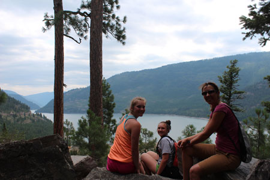 Madison, Sienna, and Amy |
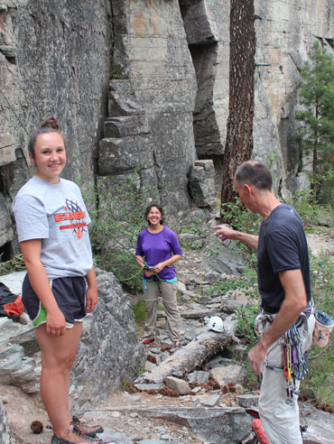 |
| Eric did the first climb to set up the rope. He must have been harassing me here. | |
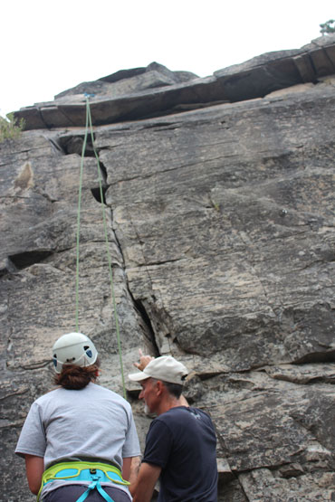 |
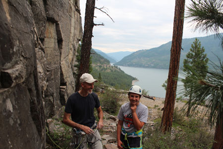 Having her doubts now! |
| Sienna wanted to go first. | |
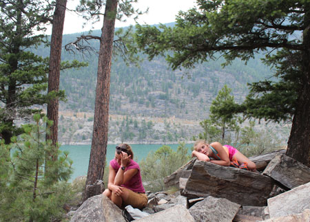 Eric warned that rock climbing is NOT a spectator sport |
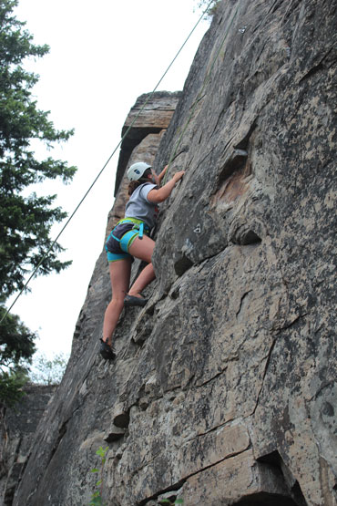 |
| It is exciting for the climber though, look at her go! | |
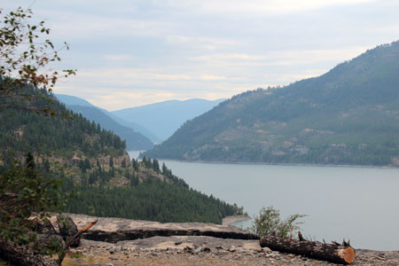 |
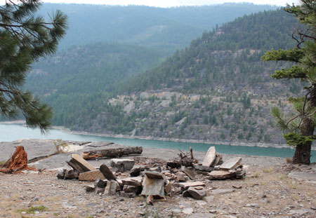 |
| Looking out over the lake from our climbing spot | They've built recliners out of the stone around a fire pit here, very nice. |
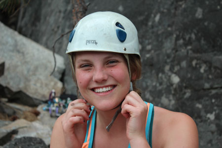 Madison is getting ready to go |
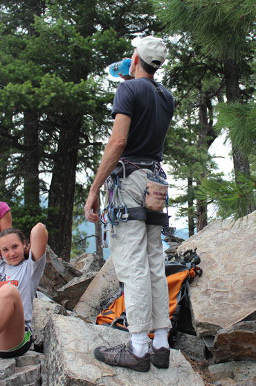 |
| A shot of Eric with his pants rolled up in a fashionable way | |
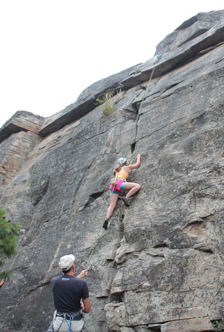 |
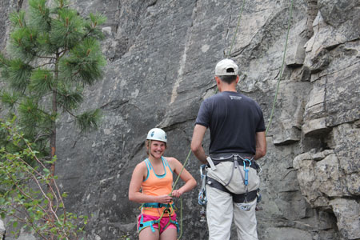 I love to capture that, "I can't believe I'm still alive" face that everyone has immediately after their first climb. |
| Madison looked like a natural, but she didn't like it. That's OK, I don't either! | |
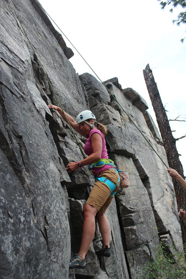 |
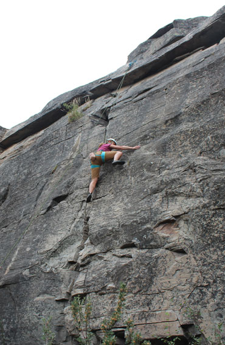 |
| Amy was a force on the rock, she really attacked it. | There she goes |
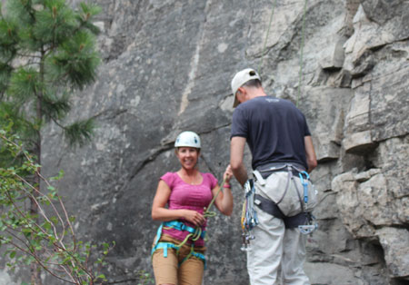 She's glad she's still alive too! |
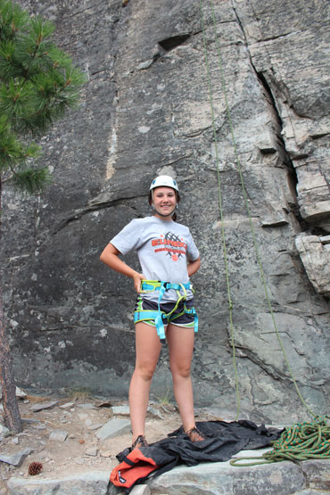 |
| Ready for climb #2 | |
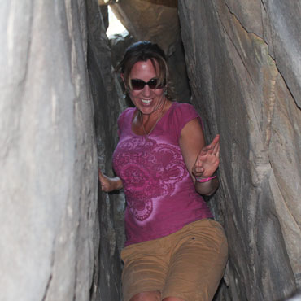 |
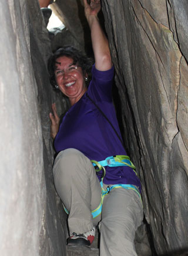 |
| Now we climb down a narrow crevice to reach another climbing area | Amy was smoother at this than me! |
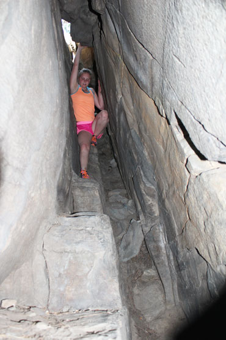 |
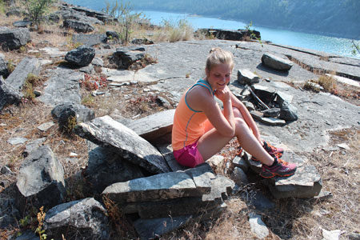 Another recliner at this lower level. Madison tried to use it, but the sun was too hot. |
| Madison has me beat too | |
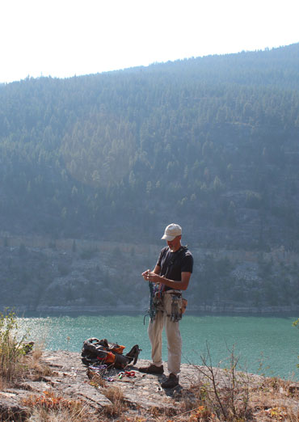 |
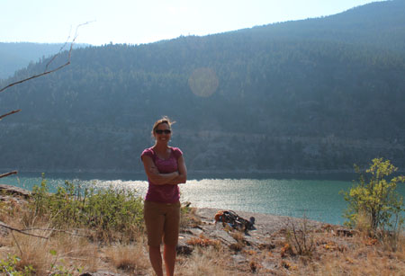 |
| Eric loves to sort his gear | Beautiful Amy by the beautiful lake |
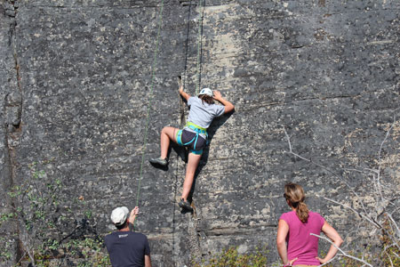 Sienna doing climb #3. That girl loved rock climbing, and she picked it right up. |
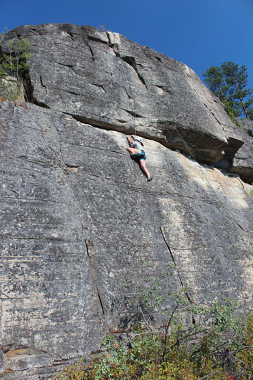 |
| This was a tall route, and harder than the last one. | |
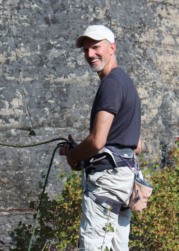 |
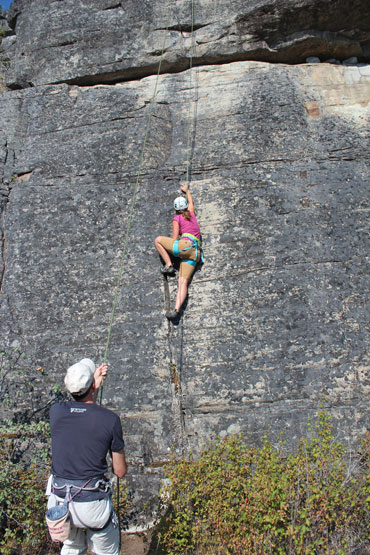 |
| My man, he loves to teach people to climb | Now Amy goes for her second climb |
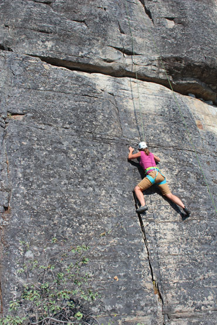 |
|
| Unfortunately, right about here she pulled her shoulder out of socket. That's the third time it has done that to her, so she is going to get it fixed. No more climbing for her for a while. |
|